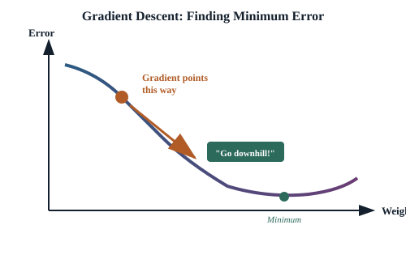
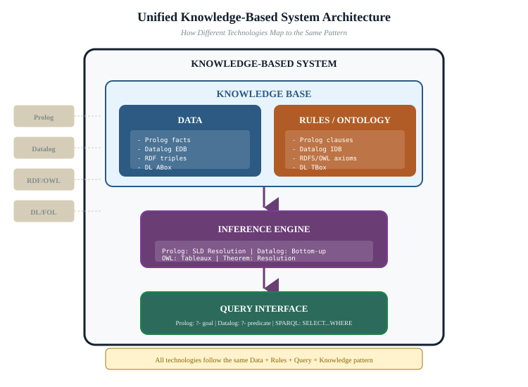
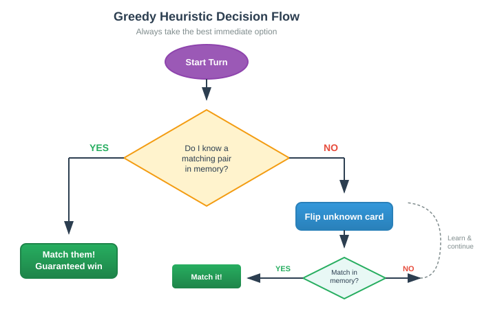

What we'll cover
- Why build in-house — custody, admissibility and privacy converge
- AI is a toolbox — the six families and the map
- Constraint satisfaction & optimization — timelines and triage (Activity 1)
- Machine learning — the decision boundary (Activity 2)
- Data preparation — garbage in, garbage out
- Evaluating ML — precision, recall & the false-positive trap
- Knowledge reasoning, topic modelling & search — the explainable trio
- Combining tools into a pipeline — search → topic → classify → CSP → rules
- Recap & bridge to Part 5
Why build in-house
Three forces from earlier parts converge on the same conclusion. Custody: evidence that leaves your control is evidence you may no longer rely on — the moment a disk image is uploaded to a third party, you have created a copy you cannot fully account for, and a gap in the chain that opposing counsel will probe. Admissibility: a method you cannot explain may be inadmissible regardless of accuracy; courts increasingly ask not just what a tool concluded but how, and "the vendor's cloud model decided" is rarely a satisfying answer. Privacy: the outside service is itself a collector, and in a forensic case the data is often the most sensitive material imaginable — intimate images, medical records, the communications of uninvolved third parties. Building your own analysis tools answers all three at once: the data never moves, the logic is inspectable, and there is no third party in the loop.
Put the three forces beside each other and notice they are not three separate worries but one worry seen from three angles. Custody is about where the data is; admissibility is about whether you can defend what you did to it; privacy is about who else can now see it. An in-house tool that runs locally on a workstation you control collapses all three into a single, answerable claim: the evidence stayed on this machine, here is the exact code that processed it, and nobody outside the investigation ever touched it.
"In-house" does not mean "primitive". A locally-run constraint solver, search index, or topic model is mature, fast, and well understood — much of it is decades-old, battle-tested, open-source software. The trade you are making is convenience for control — and in forensic work, control is the requirement, not a luxury.
Discuss
Think of one investigative task you would be tempted to hand to a cloud AI service tomorrow. Walk the three forces in turn: what happens to custody when the data leaves the building? Could you explain the method to a judge for admissibility? Whose privacy, besides the suspect's, is riding along in that upload? Which of the three would block the upload first?
AI is a toolbox
Each tool below fits a different shape of problem. The skill is matching the question to the tool, and being able to say why. A chatbot is one expression of one of these families; it is not the toolbox. The remaining sections take the tools one at a time, each with a worked forensic example, a one-line rule for when to reach for it and when not to, and a note on how it runs locally. Here is the map:
| Tool | Good for | Forensic use |
|---|---|---|
| Constraint satisfaction | "Find an assignment that satisfies all rules" | Timeline / alibi consistency checking |
| Optimization | "Find the best option under trade-offs" | Prioritising what to examine first |
| Machine learning | "Learn a pattern from examples" | Classifying files, flagging anomalies |
| Knowledge & reasoning | "Apply explicit expert rules" | Explainable, auditable inference |
| Topic modelling | "Find the themes in a big text pile" | Triaging seized messages/documents |
| Search engines | "Index and retrieve fast" | Querying terabytes of artefacts |
Instructor note
Resist the urge to lecture all six families up front — keep this section to ~10 minutes as a map, then let each family earn its detail in its own section. If the room is non-technical, the one sentence that must land is "machine learning is one tool of six, and often not the most defensible one." If the room is technical, ask which family they reach for by reflex and why — the reflex is usually ML, and that is exactly the habit this part is built to widen.
Constraint satisfaction
A constraint satisfaction problem (CSP) is defined by variables, the values they may take, and constraints relating them; the solver finds an assignment that satisfies all constraints (or proves none exists). It is the natural model for consistency questions — the questions where you do not need the single best answer, you need to know whether any answer is even possible.

Reconstructing a timeline is a CSP. Each event must occur in a window; some events must precede others; a device cannot be in two places at once. Feed those as constraints and the solver tells you which orderings are possible — and, powerfully, which proposed sequence of events is impossible, contradicting an alibi.
Worked example. A suspect claims he was at home (call it cell tower A) from 9:00 to 11:00 pm. The evidence offers four fixed facts: a text sent from his phone hit tower B at 9:40; a CCTV still timestamped 10:05 shows his car near a shop served by tower C; tower B and tower C are 12 km apart; and home (tower A) is 9 km from B. Model each timestamped observation as a variable whose value is a (location, time) pair, and add the physical constraints — you cannot travel 12 km in the gaps available, you cannot register on two towers at once. The solver does not "decide" the suspect is lying; it reports that no assignment satisfies "at home all evening" together with the tower-B text and the CCTV still. The alibi is not weakened by opinion — it is contradicted by geometry, and you can point to the exact constraint that did it.
CSPs are fully explainable: the answer is a concrete assignment and you can trace which constraint ruled out every alternative. That auditability is exactly what admissibility rewards.
When to use / when NOT: reach for a CSP when the question is "is this consistent?" with hard rules and a finite set of options; do not use it when the rules are soft preferences or fuzzy probabilities (that is optimization or ML), because a CSP forced to express "probably" loses its clean, defensible answer.
Running it locally: mature open-source solvers (constraint libraries shipped with common programming languages, or standalone solvers) run entirely on your workstation. You hand them a plain-text model of variables and constraints; nothing about the case leaves the machine, and the model file itself becomes a documented, reproducible artefact you can disclose.
Activity 1 — Model a timeline as a CSP on paper (in pairs)
Take the worked example above. On paper, list the variables (one per timestamped observation), the values each could take (which tower, which time window), and the constraints (travel time between towers, "one tower at a time", the suspect's claimed window). Then, by hand, try to find any assignment that keeps him home all evening.
When you fail, write the single sentence you would say in court: "These two observations cannot both be true if he never left, because…". That sentence — naming the exact constraint that breaks — is what makes a CSP admissible where a black box would not be.
Optimization & trade-offs
Optimization searches for the best option under an objective function — a single number that scores how good a choice is. Most real decisions trade off competing objectives (speed vs. thoroughness, coverage vs. cost), giving not one best answer but a Pareto front of defensible compromises.

Try it: the objective-function demo lets you shape a scoring function and watch the "best" choice move as priorities change — the everyday face of every triage decision an investigator makes.
Worked example. A raid seizes nine devices and you have two analysts for one day. Each device has an estimated value (how likely it carries decisive evidence, from intelligence and device type) and a cost (hours to image and examine). Encode "expected evidence per analyst-hour" as the objective and let the optimiser rank the devices. It might tell you to start with the suspect's phone and a single laptop — high value, modest cost — and defer a 4 TB NAS whose payoff is uncertain and whose cost is enormous. Crucially, when you change the objective (say the case turns and images now matter more than messages), the ranking shifts, and you can show why your order of examination was rational at the time you chose it. Optimization here is not finding "the answer"; it is making triage a defensible, written decision instead of a gut feeling.
Activity 2 — Race the strategies, then weigh the cost
Open the heuristic-search demo and run the same puzzle under each strategy in turn: greedy, epsilon-greedy, random, and brute-force. Note how many steps each takes and whether it finds the best answer.
- Which strategy reaches a good answer fastest? Which is guaranteed to find the best but slowest?
- The cost-of-heuristic trade-off: a clever heuristic saves search steps, but computing the heuristic itself costs something. Find the case where a cheaper, dumber strategy wins overall because the smart one spends more thinking than it saves.
Write one sentence connecting this to triage: when is it worth building an elaborate scoring model, and when should you just start imaging the obvious phone?
When to use / when NOT: use optimization when you must choose among options with measurable trade-offs and limited resources; do not use it when the "score" is not honestly quantifiable — a fabricated objective function launders a guess into a number and is worse than admitting you guessed.
Running it locally: optimisation routines are ordinary code over your own spreadsheet of devices and estimates. No evidence content is needed — only your value and cost estimates — so this is among the easiest tools to run on an isolated machine and to disclose in full.
Machine learning
Machine learning learns a pattern from labelled examples (supervised), groups unlabelled data (unsupervised), or improves from feedback (reinforcement). For forensics it shines at scale tasks: classifying file types, detecting known illicit images, clustering similar artefacts, and flagging statistical anomalies in logs.

See the boundary: the ML visualisation and classification demo show how a model draws a decision boundary between classes, and the activation-functions demo opens the neuron that makes a neural network bend that boundary.
Worked example. You have 200,000 images from a seized drive and need to surface the few that show, say, firearms. A supervised classifier trained on labelled examples scores every image and returns the 1,800 it judges most likely. That is a genuine time-saver — an analyst now reviews 1,800 instead of 200,000. But notice what the model has and has not done: it has produced a ranked list of candidates, not a finding. Some of those 1,800 will be power drills and toy guns; some real firearms will sit below the cut-off. The model's job ends at "look here first"; a human makes every actual determination, and the explainable record is the analyst's review, not the model's confidence score.

Activity 3 — Find (and move) the decision boundary
In the ML visualisation or the classification demo, add a few points and watch the boundary the model draws. Now drag a point across the line, or add an outlier, and see the boundary bend. Ask: how many mislabelled training points would it take to push the boundary somewhere misleading? That fragility is why ML output is a lead to verify, never a verdict.
Use ML with eyes open. A model can be confidently wrong, and "the classifier said so" is not an explanation a court accepts. Treat ML output as a lead to verify, not a verdict — and keep a human and an explainable check in the loop.
When to use / when NOT: use ML to triage and rank at a scale humans cannot reach by hand; do not use its output as a standalone finding, and do not deploy a model you cannot describe, validate on held-out data, and bound the error of.
Running it locally: models train and run on your own hardware against your own corpus — no cloud inference, no uploading evidence to score it. The trained model, its training data provenance, and its evaluation numbers all become disclosable artefacts.
Data preparation: garbage in, garbage out
Before any of these tools earns its keep, someone has to prepare the data — and this unglamorous step is where most failures are actually born. A classifier is only as good as the examples it learned from; a CSP is only as sound as the timestamps you fed it; a search index is only as complete as the files you remembered to ingest. The slogan from data science applies in full force here: garbage in, garbage out.
Two jobs hide inside "preparation". The first is cleaning: are timestamps all in the same time zone, or is one device silently recording UTC while another records local time? Are there duplicate files that will double-count, or a log that rotated and lost a day? Did a deduplication step quietly merge two suspects who happened to share a hash collision? The second is feature engineering: deciding which measurable properties of each item the tool actually sees. A file is not handed to a classifier as a file; it is handed as a list of features — size, entropy, header bytes, creation time, path depth. Choose poor features and even a perfect algorithm learns nothing useful. Choose features that accidentally encode the answer (a folder named "evidence") and the model learns a shortcut that will not generalise.

Instructor note
This is the section to slow down on for a forensic audience, because it is where their existing instincts transfer directly. "Where did this come from, is it complete, could it have been altered" — the chain-of-custody questions from Part 2 — are data preparation. Make that link explicit: a sloppy timestamp normalisation is not a data-science footnote, it is a custody-grade error that can produce a confident, wrong timeline. Spend the time here; it pays off in every later section.
Discuss
A colleague proudly reports a model that flags "suspicious" files with 99% accuracy. Before you trust it, what do you need to know about the data it learned from? List the questions: where did the labels come from, who decided what "suspicious" meant, was the test data truly held out, and what single feature might the model be secretly leaning on? How many of these are really chain-of-custody questions wearing a different hat?
Evaluating ML & the false-positive problem
Suppose your firearm classifier is, by the numbers, "95% accurate". That single figure is almost useless on its own, and trusting it is one of the most common and most dangerous mistakes in applied forensics. To read a model honestly you need two plainer ideas.
Precision
Of the items the model flagged, how many were actually right? Low precision means a pile of false alarms — analyst time wasted chasing innocent files.
Recall
Of the items that truly matter, how many did the model catch? Low recall means things slipped through — evidence missed entirely.
These two pull against each other. Crank the model to flag everything and recall hits 100% but precision collapses; make it cautious and precision soars while real evidence slips past. Which way you lean is a forensic decision, not a technical one: missing illicit material and drowning analysts in false alarms are different harms, and you must choose with eyes open.
The base-rate trap. Here is the trap that catches even careful people. Imagine a tool that detects a rare illicit-image signature, and it is genuinely good: 99% true-positive rate, and only a 1% false-positive rate. You scan a drive of 1,000,000 images of which, say, 100 are truly illicit. The model correctly flags 99 of the 100 — excellent. But that 1% false-positive rate, applied to the 999,900 innocent images, throws up about 9,999 false alarms. So of roughly 10,098 flagged images, only 99 are real: barely 1% of the model's flags are correct, even though the model is 99% accurate by its own measures. Because the thing you are hunting is rare, the false positives swamp the true ones. This is precisely why ML output is a lead to verify, not a verdict: walk into court on the strength of "the model flagged it" and you are 99 times out of 100 pointing at an innocent file.
Discuss
In the base-rate example, what would you tell an analyst about how to spend their day — and what would you tell a prosecutor about what a single flag does and does not prove? Now flip it: if the target were common rather than rare, how would the picture change, and why does the rarity of what you are hunting matter so much to how you read the output?
Knowledge representation & reasoning
Where ML learns implicit patterns, knowledge-based systems encode explicit rules and facts, then reason over them. The appeal for forensics is transparency: every conclusion traces back to the specific rules and facts that produced it — an auditable chain, not a probability.

Inference in action: the family-inference demo derives relationships that were never stated outright by applying simple rules — the same mechanism by which an investigator (or an adversary) infers facts beyond the data formally collected.
Worked example. Encode a small rulebook for account linkage: "if two accounts share a recovery phone number, they are linked"; "if two accounts are linked and one is linked to a third, all three are linked"; "if an account posts from the same device fingerprint as a known suspect account, flag it for review". Feed in the raw facts — phone numbers, device fingerprints, login records — and the system derives a linkage that nobody stated outright. Unlike an ML clustering of the same data, every link comes with its justification: this account joins the cluster because of that shared recovery number, by this rule. When the defence asks why account X was tied to the suspect, you have a sentence, not a similarity score.
Rule-based reasoning pairs well with ML: let the model surface candidates at scale, then let an explainable rule system justify or reject each one.
When to use / when NOT: use rule-based reasoning when expert knowledge can be written as clear rules and you need every conclusion auditable; do not use it when the relationships are genuinely fuzzy, exception-ridden, or unknown — hand-writing a thousand brittle rules to imitate a pattern is a job for ML instead.
Running it locally: the rulebook is a plain-text file and the reasoner is lightweight code; both run on your workstation and both are disclosable in full. The rules are the documentation — an opposing expert can read exactly what your system believes.
Topic modelling
Topic modelling discovers the latent themes running through a large body of text without anyone labelling it first. Point it at a seizure of tens of thousands of messages or documents and it returns the handful of subjects that dominate — turning an unreadable pile into a ranked set of threads to pull.
Worked example. A seizure yields 80,000 chat messages across two years. Reading them is impossible; searching them requires knowing what to search for. A topic model, run over the cleaned text, returns perhaps a dozen themes — one cluster heavy with shipping and payment vocabulary, another about a sports league, another about family logistics, another dense with coded terms and burner-phone references. Now the investigator has a triage map: ignore the sports and family clusters for now, pull hard on the shipping-and-payment thread and the coded-terms thread. The model did not read the case for you; it sorted the haystack into a few labelled stacks so you know which to search first. Each topic comes with its most representative messages, so you can sanity-check that the cluster means what its keywords suggest before you act on it.
Because it runs locally over your own corpus, topic modelling is a model citizen of in-house analysis: no data leaves custody, and the output (topic → representative documents) is inspectable and reproducible.
When to use / when NOT: use topic modelling to get an unfamiliar text pile under control when you do not yet know what to search for; do not treat the topics as conclusions — they are an unsupervised summary that can merge or split themes oddly, so always verify against the representative documents.
Running it locally: topic models are standard open-source libraries that ingest your text corpus on the local machine and emit topics as word lists and document rankings. Nothing is sent out; the topic assignments are saved alongside the case as a reproducible artefact.
Search engines
Underneath much of forensics is plain search: build an index, then retrieve fast. The same techniques that power web search — inverted indexes, ranking, and heuristic search over large state spaces — let you query terabytes of artefacts in seconds instead of scanning them linearly.

Watch search strategies race: the heuristic-search demo pits greedy, epsilon-greedy, random and brute-force strategies against the same puzzle. The heuristic usually wins — until the cost of computing it outweighs the saving. That trade-off is the heart of designing any in-house search tool.
Worked example. You ingest a 3 TB collection — emails, documents, chat exports, file metadata — and build an inverted index once, up front. Now a query for a phone number, a bank-account string, or a code word returns the matching artefacts across all 3 TB in seconds, ranked by relevance, with every hit traceable to its source file and offset. Without the index each query would mean a linear scan of the whole collection; with it, an investigator can follow a lead, see the results, refine the query, and follow the next lead at the speed of thought. Search is the quiet workhorse the other tools sit on top of: the topic model needs the text extracted, the classifier needs the files enumerated, and search is what makes both fast enough to be worth doing.
When to use / when NOT: use search whenever you can name (even roughly) what you are looking for and need to find it across a large collection fast; do not expect it to surface what you cannot name — for the "I don't know what I'm looking for" problem, reach for topic modelling or clustering first, then search within the promising cluster.
Running it locally: indexing engines run as a service on your own machine or isolated network. You point them at the evidence store, the index lives beside the case, and queries never leave the building. The index build is itself logged and reproducible.
Combining tools into a pipeline
No single tool cracks a case; the power is in chaining them, and the discipline is keeping every link explainable. Picture one seized phone with 80,000 messages and 200,000 images, and watch the tools hand off to one another:
- Search indexes everything, so every later step is fast and every hit is traceable to its source artefact.
- Topic modelling sorts the 80,000 messages into a dozen themes, and you pull the two or three that matter — shipping, payments, coded terms.
- A classifier ranks the 200,000 images so an analyst reviews 1,800 candidates rather than the whole drive — remembering, after the section above, that these are leads to verify.
- A CSP takes the timestamps surfaced by the first three steps and checks whether the suspect's claimed timeline is even possible, reporting the exact constraint if it is not.
- A rule-based check applies your explicit policy — account-linkage rules, jurisdiction rules, escalation rules — and every conclusion arrives with the rule that fired.
The point is not that the pipeline is automatic — it is that each stage is separately explainable. You can stand up in court and account for every link: search found it, the topic model grouped it, a human verified the classifier's lead, the CSP showed the alibi was impossible by this constraint, and the rule system flagged it by that rule. Compare this with handing the whole phone to a single cloud model and reporting only its verdict. The pipeline is more work, and it is the work that keeps the answer defensible. Notice, too, the order from Part 1: forensics sets the constraints first, data science decides what is worth asking, and only then do the tools run.
Discuss
Take a case shape from your own work and sketch a three-to-five-stage pipeline of the tools in this part. For each stage, name the one sentence you would say in court to justify it. Where in your pipeline does a human have to step in — and what goes wrong if they don't? Which single stage would be the hardest to defend, and could you swap a black-box step for an explainable one?
Instructor note — running the 2 hours
The three activities and three discussion prompts are the pacing backbone. If you are short on time, keep Activity 1 (the paper CSP) and the base-rate trap in the evaluation section — those two land the part's two big ideas: explainable tools win for court, and ML output is a lead, not a verdict. The take-away you want in the room by the end is that each of the six tools, and the pipeline that chains them, can be run locally and defended link by link. Test it by asking the closing discussion question and listening for whether people reach for an explainable tool unprompted.
Recap & further practice
- Build in-house so custody, admissibility and privacy are all satisfied at once — one worry seen from three angles, answered by keeping the data on a machine you control.
- AI is a toolbox: CSP, optimization, ML, knowledge reasoning, topic modelling and search each fit a different question, and each runs locally over your own evidence.
- Prepare the data first — garbage in, garbage out. Cleaning and feature engineering are chain-of-custody questions wearing a data-science hat.
- Read ML output through precision and recall, and beware the base-rate trap: when the target is rare, even an accurate model's flags are mostly false. ML is a lead to verify, not a verdict.
- Prefer explainable tools (CSP, rules, search) for anything that must reach a court, and chain tools into a pipeline where every link can be justified separately.
- Every tool here becomes an instrument the agent in Part 5 can call — which is exactly why each one must be defensible on its own first.
Further practice before Part 5: pick a small text or file collection you can legally handle and walk it through just two stages — search, then either a topic model or a simple classifier. For each stage, write the one sentence you would say to justify it in court, and note where a human had to verify a machine's lead. You will hand exactly these tools to an agent in Part 5, so the more defensible each one is now, the safer the agent is later.